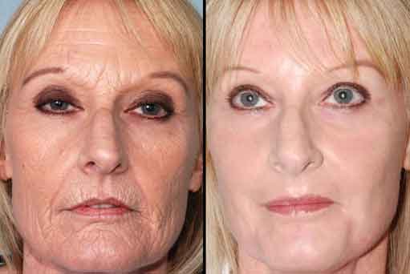

ΣΗΜΑΝΤΙΚΑ Επαναστατικός εφευρέτης κατά των ρυτίδων υποψήφιος για τρία Βραβεία Νόμπελ
Κλινικές μελέτες από τον καθηγητή Tibor Németh έχουν αποδείξει ότι το βοηθά στην εξάλειψη των ρυτίδων και στην ξηρότητα, χαλάρωση του δέρματος, εξαλείφοντας αποτελεσματικά 15 χρόνια της ηλικίας μας.
Πριν μπούμε στις λεπτομέρειες, ας δούμε πιο προσεκτικά τα αποτελέσματα αυτής της αδιανόητης ανακάλυψης. Το δέρμα μιας 54χρονης γυναίκας αναζωογονήθηκε βιοχημικά για τρεις δεκαετίες κατά τη διάρκεια μιας σειράς πειραμάτων. Για να επαναλάβουμε, το δέρμα μιας γυναίκας 54 ετών είναι σήμερα το ίδιο με μιας γυναίκας 24 ετών. Η βιολογική ηλικία μιας άλλης γυναίκας ηλικίας 34 ετών είναι ίδια με αυτή μιας γυναίκας ηλικίας 22-23 ετών.
Με μια πρώτη ματιά, αυτά τα αποτελέσματα μπορεί να φαίνονται ακραία, ίσως υπερβολικά αισιόδοξα, αν σκεφτούμε μέσα στο σημερινό επιστημονικό πλαίσιο. Εδώ είναι όπου έρχεται η εικόνα, όμως, η επίδραση του κολλαγόνου στο DNA των κυττάρων του δέρματος, ειδικά της επιδερμίδας και του δέρματος (τα δύο ανώτερα στρώματα του δέρματος). Η επιστήμη φαίνεται να βρήκε τελικά έναν τρόπο να ξεπεράσει τις ρυτίδες που μπορεί να αναστρέψουν τη διαδικασία γήρανσης.
(Patricia the Great, Βουδαπέστη) Σε μία ιστορική συνέντευξη τύπου, ανακοινώθηκε ότι η Αμερικανίδα καθηγήτρια γεννήθηκε στην Ουγγαρία. Η νέα μέθοδος φροντίδας του δέρματος βασίστηκε στην ανακάλυψη του καθηγητή Németh, ο οποίος χρησιμοποίησε τρεις άλλους νικητές βραβείου Νόμπελ στη βιολογία και τη χημεία: τους Eirik Albertsson, Nadan Petersson και Yukka Fieberg.
To έχει δοκιμαστεί σε πάνω από 800 άτομα υπό εργαστηριακές συνθήκες. Τα αποτελέσματα ήταν εκπληκτικά εντυπωσιακά: το δέρμα κάθε συμμετέχουσας γυναίκας ανανεώθηκε σημαντικά (στην ηλικιακή κατηγορία 25-72 ετών). Κατά μέσο όρο, το δέρμα τους αναζωογονήθηκε κατά 5-25 χρόνια σε μόλις 4-6 εβδομάδες. ΝΑΙ, ΑΥΤΑ ΕΙΝΑΙ ΠΡΑΓΜΑΤΙΚΑ ΑΠΟΤΕΛΕΣΜΑΤΑ! Αλλά ας επιστρέψουμε στη συνέντευξη Τύπου. Ο καθηγητής Németh κάλεσε στο βάθρο μια γυναίκα στα 30 της που απέδειξε την ηλικία της δείχνοντας την ταυτότητά της. Οι δημοσιογράφοι είναι συγκλονισμένοι! Γεννήθηκε το 1967 και ήταν 54 ετών.
Φαινόταν σαν να είχε αλλάξει εντελώς το δέρμα της.
Μετά από ένα χαιρετισμό, Ο καθηγητής Németh μίλησε για τα τυπικά σημάδια γήρανσης που αντιμετωπίζουν όλες οι γυναίκες μέχρι την ηλικία των 25. Αυτά περιλαμβάνουν μώλωπες, ειδικά μεταξύ των ματιών και των φρυδιών, την εμφάνιση γραμμών χαμόγελου στο στόμα και τη μύτη και τη χαλάρωση και την ξήρανση στο λαιμό και το πρόσωπο. Στη συνέχεια, με διάφορα αποδεικτικά στοιχεία, Ο καθηγητής παρουσίασε την ασυνήθιστη αναζωογόνηση της επιδερμίδας της Julia.
Μετά την παρουσίαση του καινοτόμου προϊόντος - μιας λευκής κρέμας σε ένα κομψό μπουκάλι - Ο καθηγητής Juliet εφάρμοσε προσεκτικά το προϊόν στο πρόσωπο, χωρίς έντονες κινήσεις ή μασάζ. Η λευκή κρέμα απορροφήθηκε αμέσως στο δέρμα. Το πρόσωπο της Julia φαινόταν φρεσκότερο σε δευτερόλεπτα. Το μέτωπο της 54χρονης ήταν τόσο ομαλό όσο σε ένα νεογέννητο. Η επίδραση της κρέμας σε ολόκληρο το πρόσωπο ήταν σαν να βλέπαμε την επίδραση μιας ένεσης Botox, αλλά αυτό το προϊόν είναι απολύτως υγιές και φυσικό, σε αντίθεση με το ενέσιμο σκεύασμα.
Στο τέλος της παράστασης, το δέρμα της Julia σχεδόν ακτινοβολούσε νεότητα. Αν δεν είχα δει πόσο
χρονών ήταν, δεν θα πίστευα ότι ήταν πραγματικά 54. Και χωρίς τα φωτογραφικά στοιχεία, δεν θα
πίστευα ποτέ ότι είχε ποτέ στεγνώσει ή υπέστη ζημιά στο δέρμα. Φαινόταν τουλάχιστον μία γενιά
νεότερη.
Μπορείτε να φανταστείτε την έκπληξή μας, ήμασταν μάρτυρες ενός πραγματικού θαύματος, αλλά ήταν
ένα θαύμα της επιστήμης και όχι επιστημονικής φαντασίας.
Η επιστημονική εξήγηση
"Η αλλαγή που έχετε δει μπορεί να είναι θαύμα για μερικούς, αλλά για εμάς τους επιστήμονες είναι απλώς μια απολύτως κατανοητή αντίδραση" είπε Ο καθηγητής Németh. "Το όλο φαινόμενο βασίζεται σε μια μοναδική ιστορική ανακάλυψη που έχει χτιστεί σε δεκαετίες εργαστηριακών πειραματισμών και σε εκατοντάδες δοκιμές και άλλες δοκιμές" πρόσθεσε Ο καθηγητής. "Οι παγκοσμίου φήμης επιστήμονες με βραβείο Νόμπελ βρήκαν έναν τρόπο να τροποποιήσουν το κυτταρικό DNA του δέρματος, αξία του, όχι δική μου. Ήταν μέσα από τις προσπάθειές τους και την αγάπη τους για την επιστήμη που έγινε αυτή η ανακάλυψη" δήλωσε Ο καθηγητής. Με την ηλικία, οι αδένες και οι μύες του δέρματος αρχίζουν να μαραίνονται, χάνουν τη στεγανότητα και την ελαστικότητά τους και αναπτύσσουν ρυτίδες και γραμμές χαμόγελου. Το δέρμα χάνει έτσι τη λάμψη και τη ζωτικότητά του.
Τι προκαλεί την ηλικία των κυττάρων του δέρματος; Σε αντίθεση με τις διαφημίσεις αισθητικών, δεν είναι απλά μια απλή απώλεια νερού, αλλά κάτι πολύ σημαντικότερο. Τα κύτταρα ξεχνούν να «τροφοδοτούνται» με την πάροδο του χρόνου, δεν μπορούν να ανανεωθούν και έτσι πεθαίνουν αργά. Μόλις πρόσφατα ανακάλυψα αυτό το φαινόμενο. Εδώ έρχεται η ανακάλυψη. Οι επιστήμονες έχουν συνθέσει με επιτυχία ένα "κολλαγόνο" - από βιολογικούς όρους - μια ειδική πρωτεΐνη που το βοηθάει "να θυμάται" και αναγκάζει το DNA του δέρματος να αναγεννηθεί και να ανανεωθεί ξανά.
Μπορούμε να αλλάξουμε τη φύση του δέρματός μας;
Είναι πολύ καλό για να είναι αληθινό; Ναι, όσο εκπληκτικό και δύσκολο σας φαίνεται, πέρασα κι εγώ τα ίδια στάδια αφού τα παρακολουθούσα όλα. Πράγματι, η ιατρική έχει αποδείξει ότι με τη βοήθεια του πρόσφατα ανακαλυφθέντος κολλαγόνου, ουσιαστικά όλοι μπόρεσαν να αναζωογονήσουν το DNA χρησιμοποιώντας το προϊόν. Έτσι, αυτή η εκπληκτική ανακάλυψη και τα φυσικά συστατικά του DNA μπορούν να ξεπεράσουν τη διαδικασία γήρανσης! Μπορούμε τελικά να καταλάβουμε τι παρακινούσε τους συγγραφείς και τους ζωγράφους για αιώνες: πώς να είσαι νέος και πάλι με φρέσκο δέρμα και φυσική ομορφιά. Οι ρυτίδες εξαφανίζονται γρήγορα και υγιεινά.
Η επιστήμη το έχει φτάσει και οι εργαστηριακές δοκιμές το έχουν αποδείξει! Το , ένα πεπτίδιο που εφαρμόζεται στο δέρμα, "διδάσκει και υπενθυμίζει" στο DNA του δέρματος όταν εφαρμόζεται στο δέρμα. Με αυτήν την επιστημονική ανακάλυψη, το δέρμα μπορεί να ανακτήσει τη νεότητά του σε σύντομο χρονικό διάστημα, καθώς οι ρυτίδες εξομαλύνουν χωρίς άλλο μηχανισμό.

ΣΧΕΤΙΚΑ ΜΕ ΤΟΝ ΕΦΕΥΡΕΤΗ
Ο καθηγητής Tibor Németh είναι διεθνώς αναγνωρισμένος εμπειρογνώμονας και πρωτοπόρος στην δερματολογία. Ο καθηγητής Németh είναι πτυχιούχος του καλύτερου ιατρικού ινστιτούτου στην Ευρώπη και από το 2014 καθηγητής στο πανεπιστήμιο Ruprecht-Karls-Universität στη Χαϊδελβέργη της Γερμανίας. Είναι επίσης επίτιμο μέλος του Βρετανικού Βασιλικού Κολλεγίου στο Λονδίνο και του Παγκόσμιου Συνδέσμου Φροντίδας του Δέρματος στη Νέα Υόρκη. Ο καθηγητής είναι μέλος των Αμερικανικών και Ουγγρικών Επιμελητηρίων Δερματολογίας. Συντάκτης διαφόρων βιβλίων και δημοσιεύσεων σχετικά με την δερματολογική και καλλυντική ιατρική. Σήμερα ζει και εργάζεται στο Λος Άντζελες της Καλιφόρνια.
Φρέσκα νέα
Οι επιζώντες Ebola μπορούν να συνεχίσουν να ελπίζουν για ένα νέο, αποτελεσματικό εμβόλιο
Είναι τα ανθρακούχα αναψυκτικά καρκινογόνα;
Ο ευκάλυπτος βοηθά με τη βρογχίτιδα, τη γρίπη και την αμυγδαλίτιδα
EgΣύμφωνα με έναν Θιβετιανό γιατρό, τα στομάχια μας είναι ο δεύτερος εγκέφαλός μαςy tibeti orvos szerint a gyomrunk a második agyunk
Τι προκαλεί φλεγμονή του λαιμού: Ψυχρά ή ζεστά ποτά;